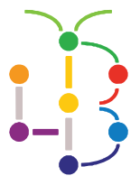

PERMATA LibraryPrivacy
PERMATA Library is the library website of the Librarian Council (Badan Pustakawan) at Kolej PERMATA@Pintar Negara. This page says what the site keeps when you sign in, and why.
Browsing
You don't need an account to search the catalogue, read past-paper links or use the free e-book list. Books you save for later are kept only in your own browser.
Signing in with Google
When you press "Continue with Google", Google tells the site your name and email address. The site uses them only to work out who you are:
- Students (school accounts): your matric number comes from your school email, so you see only your own loans. The first time, you type your name and class. These are kept in the library's records so the LC can match loans to you.
- LC members and teachers: your email or matric number is checked against the LC member list to open the Counter or Dashboard. Clock-ins are written to the LC duty record.
- Visitors (any other Google account): nothing is stored about you.
We don't ask Google for anything else, and the site never sees your password.
Borrowing records
Loans are recorded by LC members at the counter, in the library's borrowing forms. The website shows a student their own loans and fines, and shows LC Masters and teachers the overdue list. Phone numbers and Telegram usernames in those forms are never shown on the website.
Who can see the records
The LC Masters and the LC advisor teachers. The records stay in the library's own Google account, which is handed to each new Librarian Council.
Questions or removal
Ask at the library counter, or email librarypermata.students@gmail.com. We'll remove your saved details when you ask.